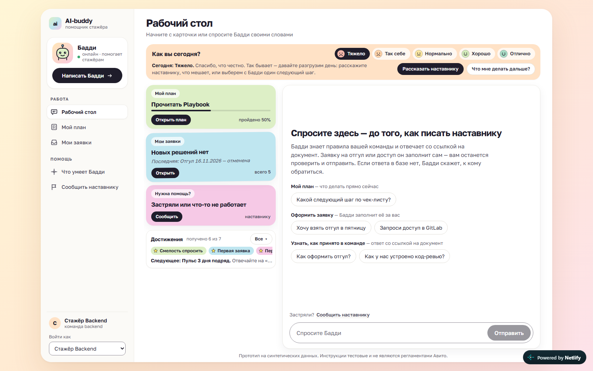

Hack&Change 2026 · кейс Авито «AI-buddy: ИИ-наставник для стажёров»
ai
Бадди
AI-buddy · ИИ-наставник стажёра
Ни один стажёр не застрянет молча.
Бадди отвечает на рутину по базе знаний команды, готовит заявки и первым замечает, кто застрял, — чтобы наставник тратил время только на важное.

Живой стенд, роль «Стажёр Backend». Прототип на синтетических данных — не регламенты Авито.1 / 11
2 Боль
Стажёр 3 часа молчал. Наставник узнал вечером
Проект не запускается. Писать «неудобно» — наставник на встречах. Правила есть в Confluence, но новичок не знает, что искать и к кому идти.
Среда, день 3 · стажёр Backend
типичный сценарий · гипотеза
14:20
проект не запускается
15:10
«неудобно отвлекать»
16:30
ищет в чатах и Confluence
17:20
наставник узнаёт
3 часа
тишины — день потерян, а наставник узнаёт о проблеме последним.
Сценарий составлен командой по опыту стажировок; интервью не проводились — проверяем в пилоте.2 / 11
3 Цена
Рутина съедает час наставника в день
гипотеза
≈50 мин
наставника в день на одного стажёра в первые недели
10 вопросов × 5 мин с переключением контекста
«Что дальше?», «кто даёт доступ?», «как оформить отгул?», «что такое MR?»
из кейса Авито
40–48 ч
за 6-месячную программу
55–65 ч — за 9-месячную
«По ориентировочной оценке команды Авито, занятость наставника за шестимесячную программу стажировки составляет 40–48 часов, за девятимесячную — 55–65 часов.»
Справа — цитата из описания кейса. Слева — оценка команды; допущение «5 минут» калибруем в пилоте.3 / 11
4 Решение
Бадди берёт рутину и следит за людьми
Отвечает
по базе команды, со ссылкой на источник; ведёт по плану — шаг, статус, % пройдено, «Что дальше»
Готовит заявку
на доступ или отгул — черновик; отправляет только сам стажёр
Замечает
«Тяжело» в пульсе или «не запускается» → сигнал наставнику
Считает
минуты наставника и вопросы, которых нет в базе знаний
1
2
3
4
1 Коротко2 Что сделать3 Кого спросить4 Источник
Справа: ответ на «Как у нас устроено код-ревью?» на живом стенде.4 / 11
5 Ага-момент
Наставник узнаёт через 20 минут, а не вечером
Без Бадди
14:20
17:20
3 часа тишины
С Бадди
14:20
14:40
сигнал наставнику → «Ответить и закрыть» → стажёр видит ответ в «Мои обращения к наставнику»
3 ч→20 мин
гипотеза · проверяем в пилоте
Правило 15–20 минут: застрял — «Передай наставнику» в один клик. Отметка «Тяжело» в пульсе — карточка «нужно внимание» у наставника.
Стажёр → руководитель → наставник: три роли, один стенд. Внизу боковой панели — бейдж «Демо-режим · модель: правила (mock)».
Перед показом — «Сбросить демо». Сценарии по шагам: specs/jury-scenarios.md.6 / 11
7 Отличие
Не бот по базе, а наставник рядом
✗Бот по базе
✓Бадди
«можно в пт не прийти» — ничего не найдено
Черновик отгула на пятницу; дата по московскому времени
Кусок документа
Коротко → Что сделать → Кого спросить + источник
Ссылка на форму
Сам готовит заявку, отправляет человек
Не видит, кто застрял
Пульс и сигнал наставнику; ответ возвращается стажёру
Нет в базе или вопрос не по теме — честный отказ и имя наставника, а не выдумка.
В демо фразы разбирают правила и словари в коде (mock); с LLM_MOCK=false — модель, инварианты остаются в коде.7 / 11
8 Доверие
Ни одного действия без человека
1 · Бадди
Черновик
«Пока вы не нажали, заявка никуда не уходит»
2 · Стажёр
«Отправить заявку»
подтверждает только автор
3 · Руководитель
Согласование
шаг плана закрывается по факту
✓ GitLab… Jira… Grafana1/3
Шаг «Получить доступы» закрывается, только когда согласованы все три; до этого видно, каких систем не хватает.
Нет источника —нет ответа: отказ и имя наставника
Зарплата —отказ и маршрут к HR BP
Пробелы базы —анонимно в «Чего нет в базе знаний»
Чужое —403: заявки, шаги, диалоги по ролям
Через MCP внешний агент тоже получает только черновик. Персональные данные маскируются до сохранения.8 / 11
9 Ценность
50 стажёров — до 42 часов наставников в день
Время наставников в день, часы
гипотеза
0,8 ч
8,3 ч
41,7 ч
1 стажёр
10 стажёров
50 стажёров
стажёры × 50 мин рутины в день (10 вопросов × 5 мин)
Честная формула в продукте
(ответы с источником + ответы из словаря + подтверждённые заявки) × 5 мин
Отказы и сигналы не считаются. «5 мин» — допущение, калибруем в пилоте.
Цели пилота
гипотезы
Вопросы, закрытые без наставника≥ 60%Рутинные обращения к наставнику−50%Время до получения доступов≤ 1 дняРеакция на «застрял»≤ 4 раб. ч
A/B: контрольная команда без Бадди и базовая неделя 0.
Верхняя граница: если Бадди закрывает всю рутину. Реальную долю измерит пилот (метрики buddy_* в /metrics).9 / 11
10 Внедрение
Прототип уже разложен под стек Авито
X-Demo-User→SSO и ролевая модель
память + JSON→PostgreSQL (целевая схема)
mock-LLM→внутренняя LLM LLM_MOCK=false
rate limit, сессии→Redis
имитации HR и IDM→адаптеры HR / IDM
сигналы наставнику→Kafka
data/knowledge→Confluence
/metrics→Grafana
POST /mcp→корпоративные агенты
события→Clickstream
89,6%
покрытие Go-кода
99,0%
покрытие фронтенда (строки)
103
golden-фразы в регрессии
152
живые формулировки в тестах
Чат: 202 + SSE, ответ не блокирует интерфейс, статус ожидания, degraded-ответ при сбое LLM. SDD: spec → тест.
Справа от стрелок — целевые системы Авито, в прототипе их нет. SDD: specs/agent/spec.md → specs/traceability.md → тесты. Покрытие пересчитано 16.11.2026.10 / 11
11 Запрос
Дайте 1 команду и 4 недели — вернёмся с цифрами
Неделя 1
Подключение
SSO, база из Confluence, внутренняя LLM
Неделя 2
Запуск
5–10 стажёров, наставники, руководитель
Неделя 3
Доработка
пробелы базы, адаптеры HR / IDM
Неделя 4
Цифры
метрики против контрольной команды
Команда
ЭльзараинтерфейсЕгорбэкендАлексагент, качество, деплойДмитрийпродукт и презентация